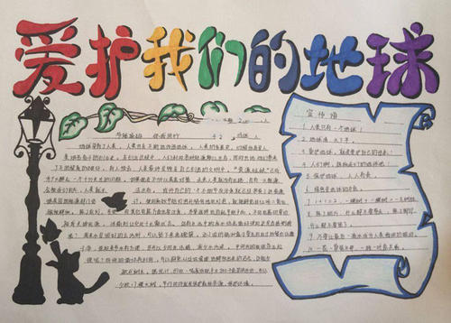
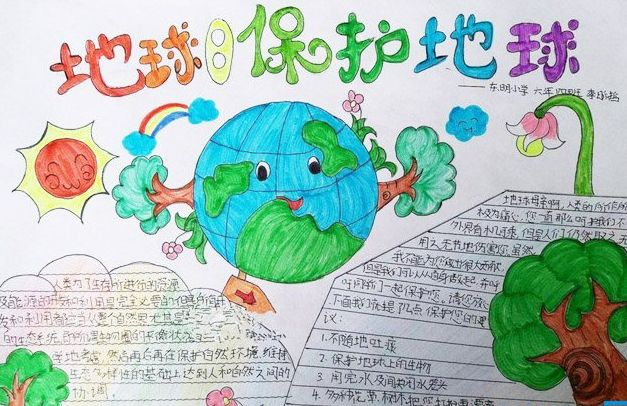
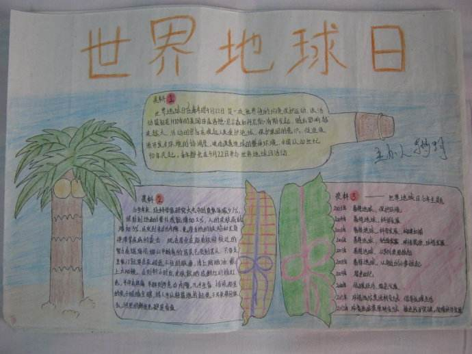
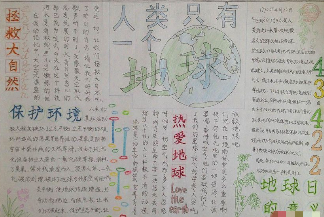
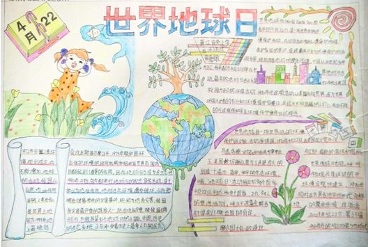

2019-04-22
每年的4月22日是世界地球日，地球日是一项世界性的环境保护活动。1970年4月22日，由盖洛德·尼尔森和丹尼斯·海斯，在太平洋彼岸的美国发起。2019年是第51个地球日。下面我们就整理了简单又好看的世界地球日手抄报模板，下面就一起来看吧。





地球日：
每年的4月22日是世界地球日(World Earth Day)，这是一项世界性的环境保护活动。该活动最初在1970年的美国由盖洛德·尼尔森和丹尼斯·海斯发起，随后影响越来越大。
最初地球日选择在春分节气，这一天在全世界的任何一个角落昼夜时长均相等，阳光可以同
时照耀在南极点和北极点上，这代表了世界的平等，同时也象征着人类要抛开彼此间的争议和不同，和谐共存。传统上在很多国家都有庆祝春分节气的传统。
地球日的由来：
人类的发展始终伴随着对自然资源的掠夺，我们现在能享受到的生活便利也都是这个地球的供给。但是迟早有一天地球也会爆发出他的不满，来惩戒滥用资源破坏环境的人类。
1970年4月22日这天无数美国人走向街头为了地球而战，这时候的美国人民再也忍受不了环境污染带来的各种恶果，雾霾浓重就是是一场生化武器战争，老年人因为各种环境问题而引发的生体机能衰弱死亡，儿童也因为糟糕的环境缩在家里。于是忍无可忍的人们终于爆发了一场空前的环境保护运动。这场运动一共越有两千万人参与，人们向政府呼吁尽快采取环境保护措施来遏制环境污染带来的灾害。
这场声势浩大的环境保护运动受到了国际上的关注，1972年一百多个国家的代表聚集在瑞典首都斯德哥尔摩，出席联合国人类环境会议。这次会议上人们充分认可了“只有一个地球”的口号并签署了《人类环境宣言》并且将4月22日定为地球日。
地球日创始人：
“地球日之父”丹尼斯·海斯生长在美国华盛顿州环境幽美的哥伦比亚河峡谷，他从小养成爱好大自然的个性。到了大学时代，他虽然读的是法律，却始终没有放弃对环境问题的关心。
第一个“地球日”活动之后，被称为“地球日之父”的海斯先后到史密森尼恩研究所和伊利诺州政府任职，研究制定有关能源方面的政策。以后又得到美国当时的能源部长施莱辛格的赞赏，担任了由能源部经办的太阳能研究所的所长。海斯一直从事环保活动，1990年，他同朋友们一起讨论筹办纪念地球日20周年的活动。他的倡议很快得到了世界上大多数国家和联合国的支持。 [1]
鉴于丹尼斯·海斯在环保事业中所做出的重大贡献，他曾荣获Sierra Club、联邦野生动物协会、美国慈善协会、美国太阳能协会、远离战争组织和Interfaith Centerfor Corporate Responsibility的最高荣誉奖项。丹尼斯·海斯还荣获了1978年度，35岁以下杰弗逊最佳社会服务奖，还曾被形象杂志（Look Magazine）评为20世纪100个最具影响力的美国人之一，并被国家奥杜邦协会评为100个最杰出的环保人士之一。在2000年又被著名的时代周刊（Time Magazine）提名为100个“地球英雄”之一。
世界地球日的意义：
地球是人类的共同家园，然而，随着科学技术的发展和经济规模的扩大，全球环境状况在过去30年里持续恶化。有资料表明：自1860年有气象仪器观测记录以来，全球年平均温度升高了0.6摄氏度，最暖的13个年份均出现在1983年以后。20世纪80年代，全球每年受灾害影响的人数平均为1.47亿，而到了20世纪90年代，这一数字上升到2.11亿。目前世界上约有40%的人口严重缺水，如果这一趋势得不到遏制，在30年内，全球55%以上的人口将面临水荒。自然环境的恶化也严重威胁着地球上的野生物种。如今全球12%的鸟类和四分之一的哺乳动物濒临灭绝，而过度捕捞已导致三分之一的鱼类资源枯竭。
世界地球日活动旨在唤起人类爱护地球、保护家园的意识，促进资源开发与环境保护的协调发展。
从20世纪90年代起，中国在每年的4月22日都举办“世界地球日”宣传活动，并根据当年的情况确定活动主题。2008年，中国确定的“世界地球日”主题与“国际地球年”中国行动的宣传口号一样，即“认识地球，和谐发展”。其目的是向社会公众普及地学知识，加强全社会对地学的认识和有效利用，提高公众对资源国情的认识，实现人与自然和谐发展。
精品学习网(5iedu.com.cn)在建设过程中引用了互联网上的一些信息资源并对有明确来源的信息注明了出处，版权归原作者及原网站所有，如果您对本站信息资源版权的归属问题存有异议，请您致信qinquan#5iedu.com.cn(将#换成@)，我们会立即做出答复并及时解决。如果您认为本站有侵犯您权益的行为，请通知我们，我们一定根据实际情况及时处理。